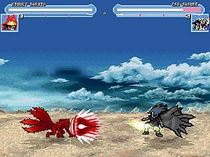

Isamu
 De: La Frikipedia, la enciclopedia extremadamente seria.
De: La Frikipedia, la enciclopedia extremadamente seria.
De la serie Videojuegos:
Isamu

probablemente todos terminaran muertos
| Desarrollado por:
|
un montón de tipos que estaban al pedo.
|
| Distribuido por:
|
lo hicieron por vía mail.
|
| Diseñado por:
|
ya te lo dije!!! Un montón de tipos que estaban al pedo.
|
| Motor
|
el de una ferrari.
|
| Género(s)
|
Educativo(como se se espera de un mugen, te enseña a pelear y sobrevivir en las calles).
|
| Fecha de lanzamiento:
|
hace unos años.
|
| Modos de juego:
|
Un jugador: arcade(no recomendado),survival(es lo mejor) y team survival.Dos jugadores: vs(también muy bueno)
|
| Requisitos:
|
pesa solamente 273 MB
|
| Disponible en:
|
versión hentai
|
| Formatos:
|
solamente CD-RUM
|
| Edades:
|
A partir de los 0 años (se puede jugar en el feto materno).
|
| Puntuaciones:
|
es el mejor mugen del mundo: 100000000000000000000000000000000000000000 puntos
|
mwahahahahah, el juego más loco
«Algún día ganaré este juego y todos me reconocereis como el gran NARUTO UZUMAKI.»
~ Naruto Uzumaki y su mayor sueño.
«Me encanta!.»
~ McDonald's viciándola hasta las 5 de la mañana.
«Buaaaaaaaaaaaa....:´( T_T »
~ Porrochimaru llorando a mares porque no le pusieron este juego.
«Diablos yo que quería echarme unas peleitas con ichigo»
~ Zaraki Kenpachi llorando porque a los productores ni se les ocurrió ponerle porque no tiene ni siquiera una espada normal.
«Mierda carajo! Había tías buenas.»
~ Jiraiya lamentándose por no poder participara de esta fiestita.
«yo seré el rey de los piratas de este juego.»
~ mono D. ruffy diciendo sus expectativas.
El Isamu es un juego desarrollado accidentalmente por unos tipos que estaban pedo: decidieron reunir personajes de distintos anime, los juntaron y crearon una ensalada de frutas un mugen. El resultado fue catastrófico, los personajes se metieron en un guerra civil sin fin. ¿Quién podrá ganar?
Personajes y Técnicas
- Naruto Futuro: Niñato hiperactivo y salido que se empeña en que todo el mundo le haga mierda metiéndose en embolados que nisupu sabe como salir de ellos. Dice que tiene una zorra encerrada dentro, pero en realidad es un colocón inconsciente que le da por la metadona que le dieron de pequeño.
- Tecnica de fotocopias: Haces 3 clones, hay 2 que atacan y hay uno super pajero que se queda ahí mirando. Lo podéis usar como escudo humano.
- Sexy no jutsu: Te transformas en una tía 90-60-90 en pelotas y todos se quedan babeando(hasta las otras tías también lo hacen porque Naruto es así de sexy).
- Invocación del shuriken gigante(el que aparece en el capítulo 3 de Naruto Shippuden): aparece un shuriken más grande que tu culo después de 2 horas de sexo anal.
- Rasengan:una esfera de mierda azul mezclada con viagra.
- Combo Uzumaki Naruto:salen 4 clones que revientan al enemigo por los aires y vos saltás y le das el golpe de gracia. Tu contrincante queda hecho pedazos en el suelo.
- Futon Rasen Shuriken: la súper técnica de Naruto, todavía no apareció en el anime pero
los gilipollas las amables personas que desarrollaron este juego decidieron ponerlo. Se supone que el chakra es de color azul pero esta técnica lo tiene verde. Es un súper shuriken de chakra girando a alta velocidad que parte al enemigo en 500000000000000 pedazos( siempre saca la mitad de la vida del que lo recibe).
- Haciendo el Futon Rasen Shuriken
Naruto hace 3 clones y se forma el Futon Rasen Shuriken.
Desaparecen los clones y Naruto se dirige al objetivo.
Aparece una esfera giratoria de color verde.
El contrincante y Naruto vuelan por los aires(Naruto también recibe un poco de daño).
- Naruto de 4 colas: Aquí Naruto cree que le ha salido una
polla cola y que es por culpa de la zorra, pero en realidad es porque se fue de botellón con Jiraiya y se ha puesto ciego hasta las trancas.
- Rasengan con el chakra de la zorra de 9 colas: Como en el capítulo 135 de Naruto, hace un súper Rasiiiiiingaan pero esta vez está hecho de vino tinto porque es de color rojo.
- Súper rayo mortal: Definitivamente esta es la técnica más poderosa de Naruto en estado 4 colas, primero
eyacula larga un montón de chakra y la comprime. Luego se traga su propia leche bola de chakra súper hiper condensada. Por último su cuerpo se agranda y expulsa toda la chakra en forma de un rayo ultra potente que hace un hiper cráter.
- Múltiples combos: El chakra del Kyuubi se excita y empieza a alargarse el
amigo como una manita pervertida.
 Haciendo el super Rayo mortal
- Neji: Su sueño es poder dar una patada tan buena como la de Bruce Lee (una patada, no una polla tan buena como la de Bruce Lee). En numerosas ocasiones fue visto con Tenten "Entrenando" y probando nuevos tipos de "armas ninja"
- Patada lejos de alcanzar a Bruce Lee.
- Espiral que hace mierda a cualquiera(que no se te ocurra acercarte).
- Tiene una técnica que te toca las 64 partes erógenas de tu cuerpo y hace que llegues a un orgasmo super intenso que dura 1 hora.
- Cejotas alias "Lee": Es discípulo por parte de octavo vicepresidente de comunidad de vecinos de Bruce Lee. Por lo demás solo es un pillado
- Solo sabe taijutsu(que pelotudo).
- Puede llegar a abrir las 3 puertas(pero en realidad sabe abrir hasta 5 puertas).
- 3 hokague:
- es muy fuerte en todos los aspectos.
- siempre se muere al final de la pelea no importa si derrotaste a tu oponete por lo cual la partida termina en empate.
- Yondaime: No es el padre de Naruto, lo que pasa es que donó semen y la madre de Naruto lo cogió en vez de coger el de Jiraiya, el cual le molaba más y no era ranófilo.
- rasiiiiiiiiiiiiingan.
- Combos.
- Haces que salga un clon tuyo y te golpea como Naruto en la pelea con Neji.
- Torbellino de la muerte, saca mucho.
- Podes invocar al jefe Gama(es una rana que en realidad mide más de 100 metros de altura pero en este juego de mierda solo mide 3 metros) que te tira un fuegito que ni si quiera te mueve un pelo.
- Itachi: El hermano del malparido del sasukemo, el cual en este juego demuestra que en relidad "quiere" mucho a su hermano a pesar de quitarle el traje de fiesta negro de nubes rojas:
- Katon-goikoga no-jutsu: es una bola enorme(piensen mal) de
mierda quemada fuego que se usa a distancia y mata de un solo golpe.
- Tsuyokonomi: Pone al mapa de un color morado en el cual el enemigo no se puede mover y si lo sabes usar mata de un solo golpe.
- Emoterasu: invoca un fuego negro que persigue y mata al enemigo de un solo golpe.
- Susanno: invoca un espiritu totalmente invencible(aparte de feo) el cual no mata de un solo golpe( al fin una tecnica de itachi que no lo hace) pero transporta al enemigo a una dimension en la cual esta destinada a morir.
- Killerbee: es un rapero de mierda que lo unico que puede hacer es
violar sacarle el chakra al toro de ocho colas.
- Tecnica de la doble espada rapera: si no fuera por esa basofia de musica que usa esta tecnica seria una mierda.
- transformacion: Se transforma en
mujer el demonios de ocho colas para que haga ataques superpoderosos y cante rap o reggeaton(si es su tecnica final pero es igual de mierda que la musica que canta).
- deidara:Es un flacucho neo-nazi que nacio en la ciudad de la villa oculta de la roca en alemania y que forma parte de la organizacion terrorista akatsuki.
- Exploto todo no jutsu: consite en lanzar explosivos por todo el mapa( tremendo piromaniaco).
- c2: invoca a un pajaro gigante desde el cual deidara puede lanzar sus
fuegos artificiales explosivos.
c8: deidara se autodestruye y causa una explocion que destruye todo el mapa y solo puede ser repelida por el susano.
- Kakuzu: es un mercenario al que solo le interesa el dinero y forma parte de la organizacion akatsuki y tiene seis corazones.
- Jutsuelemtal: Puede usar un jutsu de cada tipo de cakra y es muy util para asesinar a los otros personajes y despues violarlos.
- jutsu de endurecimiento: Kakuzu se echa barro para endurecerse y asi poder ser invencible.( nota: no funciona con los rayos.)
- Ichigo Bankai: Drogadicto peligroso adicto al Reiatsu que le proporciona su camello habitual, Kuchiki Rukia. Debido a esa adicción va por la calle con un cuchillo de cocina matando a sus alucinaciones, además de hablar con su mejor amigo: Un muñeco de peluche llamado Kon.
- Golpes simples con la espadita.
- Combos super mortales pero que gastan energía.
- Podes hacer un ataque que corres como un idiota desaforado y lo deja hecho mierda al enemigo.
- También sabe teletransportarse.
Podes activar el bankai:
- Tus golpes son más fuertes.
- Podes clavar la espada y te salen unos rayitos matadores que destrozan todo.
- Hitsugaya: es un pendejo que ya es Capitán.No creas que te lanza hielo, solo es caspa compactada de colo azul debido a utilizar una marca blanca de anticaspa.
- Pelea con
un consolador la espadita.
- O llamas a tu amiga teniente que en realidad se leyó la guía para ser puta y se convirtió en una puta cara. Lo unico que hace tu amiga es fumarse un porro contigo y tu oponente se muere de celos y de envidia.
- También podés llamar a un dragoncito de hielo que te rompe todo.
- Biakuya: es el tipico superdotado al que todo le sale bien y casi iguala a itachi ademas de que ambos comparten los mismos objetivos que es mostrar su
odio amor por sus familiares.
- Sho(coñazo): sirve para
descuartizar golpear al oponente con una fuerza destructiva y mata de un golpe y medio.
- shumpo: asesina al oponente de un solo golpe( solo si es de bleach) y a los otros de dos golpes (a excepcion de Ryuck por ser tan feo).
Dragon ball
- Goku: Extraño tiparraco que consume una nueva droga de diseño llamada Ki con la cual cree que puede lanzar bolas de hagua muuuuuuy grandes. Sus principales compañeros de farra son su hijo, un motero, un calvorota y un tipo que trabaja en picolín
- Kamehameha: consiste en lanzar rayitos por todo el mapa y es muy util para partirle la madre a los personajes que no vuelan( si el vuela porque es arrecho).
- Ssj1,2,3: cuando logras usar este poder te vuelves un ser superpoderoso que casi mata de un solo golpe.
- Genkidama: es su tecnica final y aunque nada mas quite la mitad que el ssj 3 ocupa todo el mapa por lo cual es capaz de patearle los cojones a todo el mundo.
- Krilin: en realidad no es un perosonaje fuerte tan solo es uno de sacrificio y si lo desbloqueas los otros personajes de dragon ball lo podran invocar de sacrificio.
- Piccolo: Guardia civil retirado que un día le cruzó la cara a Goku, pero después se fueron de farra un día y desde entonces son buenos colegas. Trabaja para Picolín
- Makakosampo: es la habilidad mas fuerte de juego pero tambien es la mas facil de esquivar lo que la convierte en una mierda.
- Masenko: esta tecnica es una verdadera basura y no sirve siquiera para derrotar a krilin.
- Gohan: Es el hijo de Goku, pero ser un retaco no le quita de llevar palizas y que Goku se lo lleve de botellón cuando le dé la puta gana.
- Superkamehameha: es parecido al de goku pero es mil veces mejor.
- Supermasenko: es un ataque decente a diferencia de la
mierda que usa piccolo.
- Ssj1,ssj2: este ataque le da un poder que iguala al ssj3 de goku lo cual no es muy logico que digamos.
- Ráfaga de energia: Es un ataque normalito( al fin uno que no es super) el cual llena todo el mapa de rayos de energia amarillas las cuales persiguen al oponente y le parten la madre.
- Freezer: Tan solo es una mala copia de Subzero, del Mortal Kombat. Este de ser tan feo cogió complejo y cada vez que se transforma intenta metrosexualizarse más para agradar más que los otros personajes.
- Rayodestructor: puede derrotar a vegeta de un solo golpe pero es nulo contra los demas..
- Granboladelamuerte: es una bola roja de gran tamaño(vuelvan a pensar mal) que destruye todo lo que toca y ocupa todo el mapa y solo la puedes detener si tu personaje es rubio( entiendase Naruto o los ssj)
- Cell: Cucaracha que tomó un prototipo de mezcla perfecta entre residuos nucleares, baba de Wombat, coca cola y Pepsi, por lo que mutó de una manera descontrolada. Tiene cuatro formas dependiendo de como aumente la cantidad de Coca cola en su organismo:
- Fase 1: es una mezcla rara de cucaracha con mosquito y solo puede usar el kamehameha o las debiles habilidades de piccolo. (puede regenerarse)
- Fase2: es un gran
tranformista bicho raro y tiene el doble de la fuerza del anterior y puede usar las tecnicas de vegueta (a pesar de esto vegueta le parte la madre).
- Fase3: o su fase perfeta puede usar todas las tecnicas de dragonball ademas del jutsu clones de sombra tiene 100 vece mas fuerza que el anterior pero necesitas
violar absorber a Nº18 para llegar a esta fase tan poderosa que le gana a Goku ssj1.
- Fase4: o superperfecta(aunque yo no note ninguna diferencia aparte de que toco un enchufe y ahora tenga rayos alrededor de su cuerpo) en la cual dobla lo poderes de anterior igualando al ssj3 y es capaz de
violar derrotar a Gohan sssj2 ( pero aun asi pierde contra el).
- Boo:Solo es una bola de chicle superevolucionada que se fugó del prototipo de chicles con sabor a chocolate que pensaba en sacar al mercado Willy Wonka.
- Kamehamehadechicle:Es una version rosada de kamehameha y es mil veses mas fuerte.
- Gran bola gigante de chicle: el una bola de chicle tan grande que es capas de destruir un planeta de un solo golpe.
- Vegeta: Motero alcoholico y chuleta que se dedica a fardar de lo molón que es y de lo
fuerte metrosexual que parece el pavo. Odia a muerte a Goku porque un día llevaba un Look mejor que el suyo y le ganó en un concurso de comer sandwiches de queso.
- Presumoatack: consiste en que vegueta se pone a presumir frente al oponente. (nota: eres vulnerable a que te den una paliza).
- Ssj y ssj2: no le sirven de nada ya que igual le dan un paliza.
- Bigbangattack: consiste en que vegueta lanza una bola gigante de mierda la cual siepre falla y nunca llega a hacer daño.
- Zorro Ronoa: Vago redomado buscado por la marina por hundir 392 empresas el solo vagueando. Aprendió a utilizar tres espadas porque tuvo que barrer muuuuuuuuuuuuuuuuuuuuuchos sitios, y la práctica con la escoba le hizo merecedor de ser maestro:
- Furia de espadachin: lo convierte en un loco (ya lo era antes de usar la tecnica) que puede destruir al enemigo en 100 golpes, pero pega muy rápido.
- Monkey D.Luffy:Chaval que se comió una naranja en mal estado y por culpa de eso y a unas gomas elásticas que comió de niño, está así de
pirado elástico:
- Misíl de goma: Básicamente es eso, el tipo se te tira encima. Al ser de goma, no te hace una mierda
- Muchas hostias:técnica que consiste en arrearte una somanta de leshes
- ninfómano que se quedó así a falta de una buena mujer en el barco-cocina mientras "entrenaba" con Zeff.
- Patadón para arriba:Consiste en eso, te arrea una patada para arriba y te manda por los aires
- Patadón por el medio: te arrea una patada que te rompe el esternon. No mueres a nos ser que tomes drogas
- Patadón en los cojones:Vamos, que el tipo no es tan tonto...
Aparecen otros personajes de otras series japonesas como:
- ドナピバネ(y este quién es??)
- Mario(aunque no lo creas, es más fuerte que tu novia cabreada)
- Sora(lo único que hace es revolear
la cartera una llave de 2 metros)
- Link( es un enano que aunque parezca increible es
un violador el segundo personaje mas fuerte de juego).
- Etc.(por que son demasiados!!!)
Cosas que hacer para tener el juego
Este juego de mierda magnífica calidad y sabor para la degustación, puede ser adquirido por el lector de esta página en el enlace que aparece más abajo. Pero no solo basta con el enlace de ahí abajo para apoderarte de este viciador magnífico videojuego, ya que hacen falta unas cuantas cositas más, tales como:
- Paciencia (y bastante)
- Pulmones
- Teclado
- Cubo para remojar los pies
- Uñas (para comértelas)
- Pies (para tamborilear en el suelo)
- Enchufe (por si quieres suicidarte)
Reunidos los requisitos(aunque creo que me he dejado alguno por ahí...) ya puedes empezar a jugar al videojuego y engancharte hasta quedar zombificado por los restos.
Trucos
Como en todos los videojuegos, siempre hay truquillos y trampitas realizables, y este no se puede dejar aparte. Algunos de estos truquitos son:
- Desbloquear a Ganondorf: Para hacer este truco debes hacer lo siguiente.
- * Llegar al menú de juego
- * Coger al Sasukemo
- * Hacer una peleílla con Itachi y hazle como último golpe una enculada
- * Después de ganarle una vez, Itachi te dirá que quiere dejar la pelea
- * Entonces con Sasuke, intenta percularlo otra vez.
- * Itachi te dirá que en realidad no quiere matarte y se lía contigo
- * Después de bastante Yaoi, Ganondorf es tuyo.
- Desbloquear a Inoue Orihime: Para desbloquearla solo hay que seguir unos sencillos y rápidos pasos. Primero coges a Ichigo y montas una pelea contra Freezer. Durante la pelea Freezer va a tener la extraña costumbre de "atacarte" por la espalda, pero tú deberás evitar dichos ataques. Después de apalizarlo vendrá Sora a decirte que eres un Homosexual por dejar a Freezer en ese estado (pose de violación), así que Rukia aparece, le chiva eso a Inoue y ya la tienes seleccionable (solo viene para apalizar a Ichigo).
- Desbloquear a la Inanimada barra de carbono: Tienes que ir con Luigi y enfrentarte a Goku, el cual debe intentar rematarte con una Bola Genki. Si todo va según lo planeado, Luigi sacará la barra de carbono y parará la Bola con ella, después se la tirará a Goku y le matará.
- Desbloquear a Masashi Kishimoto: Debes ir con Naruto y aniquilar uno por uno a todos los personajes del Juego, luego coger un Kunai y sacrificar a tu familia a Doraemon y por último debes donar cuatro Jamones a la Frikipedia. Si lo haces todo bien, conseguirás a este personaje que puede borrar (literalmente) a los demás personajes.
- Desbloquear a Itachi: tienes que usar a ichigo y derrotar a sasukemo entoces itachi se arrechara y te partira la madre pero si lo derrotas lograras desbloquearlo y como bono te daran a chico-afeminado tiburon.
- Desbloquear a Gannondorf para derrotar a Ryuk y cuando casi le ganes te lanzara dos manzanas y si las esquivas lograras desbloquear a Link quien sera uno de los protas más fuertes de juego.
- Desbloquear a Byakuya Kuchiki: Tienes que usar Itachi y asesinar a Ichigo lo cual no es muy dificil entonce Byakuya se cabreara y te intentara asesinar con su mejor ataque y si lo esquivas y lo asesinas con el Amateratsu lo tendras desbloqueado. ( Byakuya es el segundo mejor personaje y es igual de fuerte que Goku ssj3)
Pros del juego
- Puedes enseñar que "!Mi personaje es mejor!"
- Puedes ver que técnica mola más(¿Bankai o rasiiiiiigan?)
- Ichigo puede meterle una paliza a Naruto(solo si eres blichero)
- Naruto puede meterle una paliza a Ichigo(solo si eres Na
bruto)
- Naruto puede meterle una paliza a Naruto(¿Esto se puede?)
- Puedes hacer que Itachi viole al Sasukemo(se lo merece)
- Toodos los hijos de puta q aman naruto, porfin veran q naruto mate a goku, solo en trading
- No aparece Porrochimaru
- Itachi es muy fuerte
- No aparece chuck norris.
Contras de juego
- No hay casi mujeres (es raro...)
- Aparece Mario
- Las técnicas están muy vistas (!Que hagan algo distinto, ya!)
- Los protas son muy débiles y los villanos muy fuertes.
- No esta Jiraya
¿Sabias que...
- ...El Isamu es el mejor muugen que ha existido?
- ...Itachi es el mejor personaje?
- ...Están bucando a alguien que cree la version 2.0?
- ...Esa persona puedes ser tu?
- ...Ya no puedes ser esa persona porque esa persona soy yo?
- ...En la nueva versión hay un personaje llamado Emokid al cual puedes golpear pero no matar porque se suicida?
- ...Si usas al Emokid serás un emo y seras perseguido por frikis el resto de tu vida?
- ...Pero no durara mucho la persecusión ya que al ser un emo te suicidarás?
Como pasar el juego en la mitad de tiempo
EL juego se divide en tres fases:
1. Fase Narutera: si quieres pasar esta fase en la mitad de tiempo, lo único que tienes que hacer es matar a Deidara con el Fuutonrasiiin-Shuriken lo cual abrirá un portal del tiempo el cual te llevará al último mundo donde serás Naruto; ahí lucharás contra Pein quien te intentará violar capturar, pero si lo vences habrás pasado la fase narutera en un cuarto del tiempo(en la version 2.0 hay el doble de personajes de naruto).
2. Fase Blichera: esta es de solo un escenario y lo único que tienes que hacer es dejarte violar vencer a Byakuya pero ya que camión.
3. Fase Dragonbolera: no tiene atajo y lo unico que puedes hacer es seguir el siguiente esquema:
4. Yo te mato
5. Tú me matas.
6. Yo revivo.
7. Tú revives.
8. Yo te mato con una genki y me dejo secuestrar por un dragón.
Véase también
|
|
 Shooter Shooter
 Terror Terror
 Velocidad Velocidad
 Rol Rol
 Estrategia Estrategia
 Aventuras Aventuras
 Fight! Fight!
 Clásicos Clásicos
 Deportivos Deportivos
 Aventura gráfica Aventura gráfica
 Novela visual Novela visual
 Personajes de videojuegos Personajes de videojuegos
|
Autor(es):
- Frikiman
- Naruto hyuga
- FREEZER
- Tobi
- Veni Vidi Vici
- Dark temptation
- Catacras
- Hidan-friki
- Helloombark
- Uchihamuerto
Frikipedia 2005-2016, Licencia
GFDL 1.2 - Extraído por FrikiLeaks